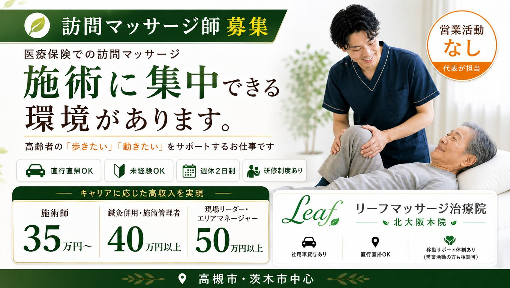
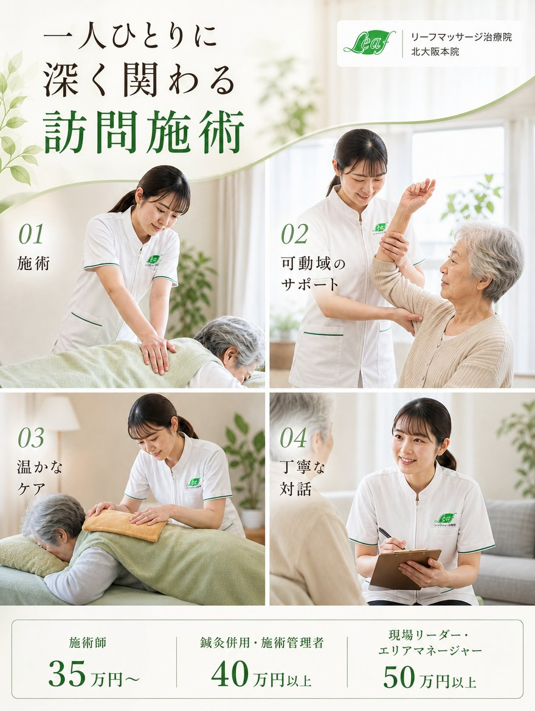
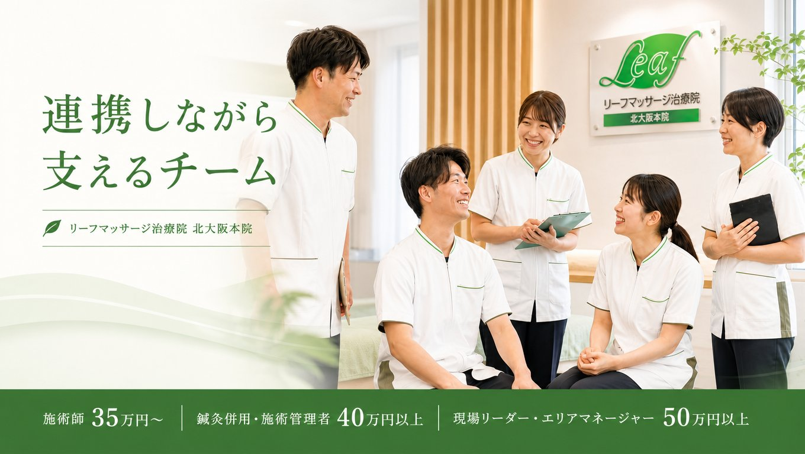
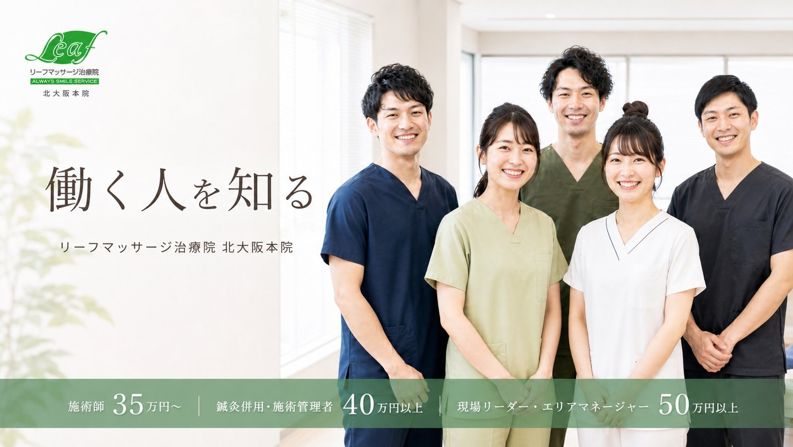
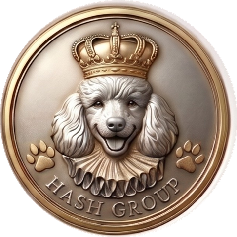
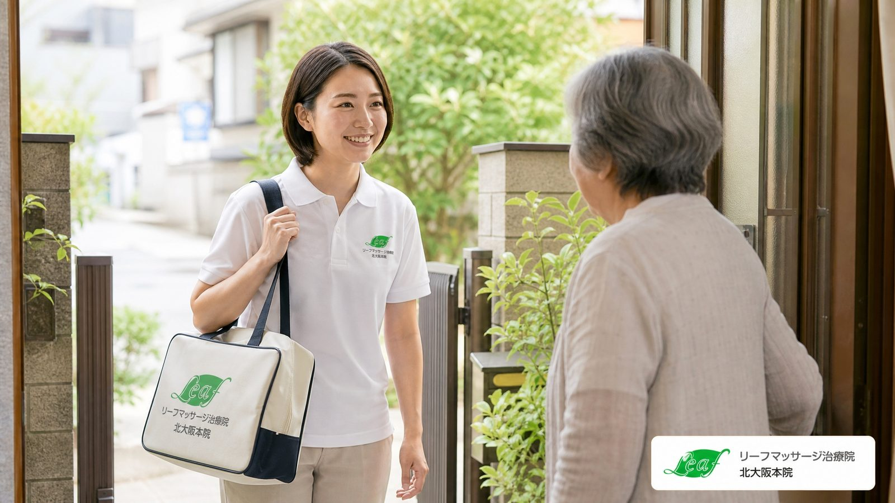
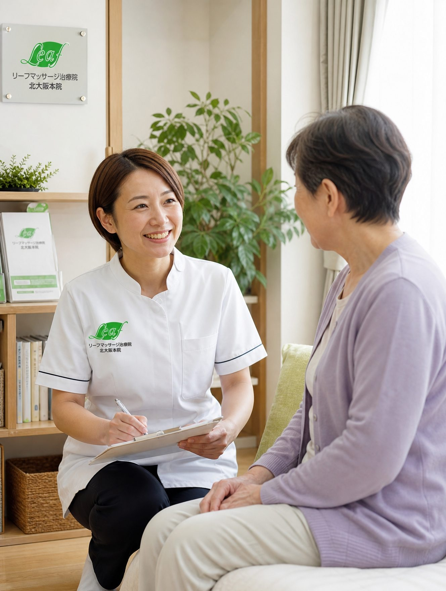
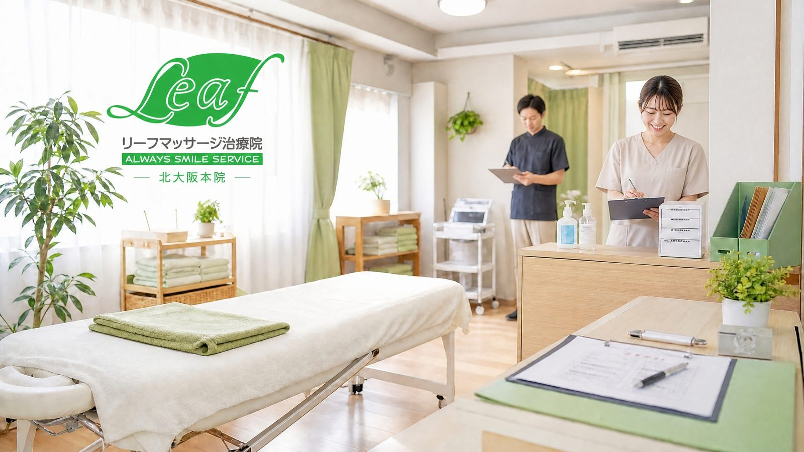

なぜこの条件で募集できるのか
高い給与と休日は、無理をして出しているものではありません。仕組みで成り立たせています。
- 営業と新規開拓は代表が担う施術者は営業に時間を割かず、担当する施設と利用者様に集中できます。
- 施設集約型で移動ロスが少ない1施設で複数名を続けて担当。個人宅を転々とする訪問より1日の稼働が濃くなります。
- 役職ではなく、任せる仕事で決めていますあん摩マッサージ指圧師の施術者は35万円〜。施術管理者を担う方（あん摩の管理者、または鍼灸部門の管理者）は40万円以上、現場リーダー・エリアマネージャーは50万円以上です。

仕事内容
高槻市から豊中市まで、北摂5市の高齢者施設を中心に、医師の同意にもとづく医療保険適用の訪問マッサージと機能訓練を行います。
- 施設集約型で移動が少ない1施設で複数名を担当。個人宅を転々とする訪問とは負担が違います。
- 直行直帰・スケジュールは自分で組む担当施設の訪問順は施術者の裁量です。社用車貸与あり、自転車・公共交通機関でも訪問できます。
- 営業活動・新規開拓は代表が担当施設の新規開拓や契約は代表が行います。施術者は既存の担当先に集中できます。
- 施設・ケアマネージャーとの連携利用者様の状態の変化を、施設職員や施設内・外部のケアマネージャーと共有します。施術だけで終わらず、生活を支えるチームの一員として関わる仕事です。
- 記録は要点を押さえた形式で必要な項目に絞った記録様式を用意しているので、書く時間より利用者様と向き合う時間を優先できます。
- はり師・きゅう師をお持ちの方へ実務経験1年以上の方に、鍼灸部門の施術管理者として立ち上げを担当いただきます。施術管理者研修が未修了の方は、入職後に会社負担（受講日は出勤扱い）で受講できます。修了済みの方はそのまま管理者に就けます。

1日の流れ
9時から18時、休憩60分。繁忙日でも13件程度です。
自宅から最初の施設へ直行
担当施設の訪問順は施術者自身が組みます。当日の調整もご自身の裁量で。社用車・自転車・公共交通機関、動きやすい手段で構いません。
午前の施術（4〜5件）
1件20分。同じ施設内で続けて担当するため、移動のロスがほとんどありません。
休憩60分
施設近くで自由に。事務所に戻る必要はありません。
午後の施術（4〜5件）
機能訓練を組み合わせ、歩行や関節可動域の維持をサポート。気づいた変化は施設職員やケアマネージャーに共有します。
記録を入力して直帰
その日の施術内容と気づいたことをスマートフォンから記録して、直帰。18時には仕事が終わっています。

一人で抱え込まない体制
訪問は一人で回りますが、判断は一人でしません。
- 入職後は同行から代表または先輩施術者が同行し、施設ごとの流れと利用者様の状態を引き継いでから独り立ちします。
- 気づきはすぐ共有状態の変化や気になる点は、その日のうちに代表・施設職員・ケアマネージャーに共有します。
- お客様対応の専門担当が在籍利用者様・ご家族・施設からの苦情や込み入った相談は、施術者が一人で抱える必要はありません。金融機関でお客様相談を長く担当してきたスタッフが、事実を共有してもらったうえで説明や調整を引き受けます。施術者には、施術に戻ってもらいます。
- 施術と記録に集中できる書類まわりは院側で支えます。

スタッフの声
フルタイムで整骨院から転身した施術者と、自身の施術院を経営しながら週に決まった時間だけ担当する施術者。働き方は一つではありません。
整骨院勤務15年 → 訪問未経験で入職
訪問は初めてでしたが、施設で続けて担当できるので整骨院時代より一人ひとりに向き合う時間があります。営業を任されないので、施術と利用者さんのことだけ考えていられます。
自身の施術院を約40年経営
アルバイトとして施設2件を担当
自分の院を続けながら、毎週決まった曜日と時間に、院から自転車で5分ほどの施設を2件担当しています。営業や書類のやり取りは代表が持ってくれるので、施術だけに集中できます。
40年この仕事をしてきましたが、施設で継続して同じ方を診るのは、院とはまた違うやりがいがあります。
こんな方に合いやすい仕事です
条件だけでなく、仕事の中身と役割にも納得したうえで、長く取り組みたい方に向いています。
- 一人ひとりの利用者様にしっかり向き合いたい
- 施設職員やケアマネージャーとのやり取りを大切にできる
- 状態の変化に気づき、伝えることに意味を感じる
- 誠実に仕事を積み重ねたい
- 将来は現場を支える立場も視野に入れたい
- 整骨院・鍼灸院で培った技術を、別の形で活かしたい
キャリアパス
いまは少人数です。だからこそ、これからの中心になる方を迎えたいと考えています。人手を埋める採用ではなく、将来の役割まで用意した採用です。
- 月給35万円〜
訪問施術者（あん摩マッサージ指圧師）
担当施設の利用者様を受け持ち、施設職員・ケアマネージャーとの連携の窓口になります。
- 月給40万円以上
施術管理者（あん摩／鍼灸）
あん摩マッサージ指圧師として施術管理者を担う方、または、はり師・きゅう師として実務経験1年以上あり鍼灸部門の施術管理者を担う方。研修修了済みの方はすぐに、未修了の方は会社負担で受講後に就任します。
- 月給50万円以上
現場リーダー・エリアマネージャー
施術者をまとめ、代表とともに営業や新規施設の立ち上げにも関わります。北摂エリアの拡大を一緒に進める役割です。

代表メッセージ
私たちが大切にしているのは、現場の仕事がきちんと報われることです。
私は製薬会社のMRとして長く医療の現場に関わり、その後この治療院を立ち上げました。営業は自分がやると決めています。施術者に楽をしてほしいからではなく、施術と利用者様への責任は、現場にいる人にしか果たせないからです。
利用者様、施設の職員さん、ケアマネージャーさん。関わる相手が多い仕事です。技術と同じくらい、変化に気づいて伝えることが価値になります。そこを大事にできる方には、給与でも、将来の役割でも応えたい。一緒にこの院を大きくしていける方をお待ちしています。
リーフマッサージ治療院 北大阪本院
AKAHASH株式会社 代表取締役 橋口 宜央
募集要項
正社員｜あん摩マッサージ指圧師（訪問）
| 給与 | 月給35万円〜あん摩マッサージ指圧師（施術者）35万円〜／施術管理者（あん摩または鍼灸、研修修了後）40万円以上／現場リーダー・エリアマネージャー50万円以上／昇給年1回／決算賞与（業績連動） |
|---|---|
| 資格 | あん摩マッサージ指圧師（必須）はり師・きゅう師（実務経験1年以上）歓迎：鍼灸部門の施術管理者候補／普通自動車免許 あれば尚可（AT限定可）／理学療法士 あれば尚可 |
| 経験 | 整骨院・鍼灸院等での施術経験者 歓迎訪問未経験・ブランクのある方も可。入職後に同行研修があります。 |
| 勤務時間 | 9:00〜18:00（休憩60分）残業なし |
| 休日 | 完全週休2日制（土日祝）・年間休日126日年末年始休暇 12/30〜1/3／有給休暇は法定どおり |
| 勤務地 | 北摂5市（高槻市・茨木市・吹田市・豊中市・箕面市）の高齢者施設（直行直帰）担当先はお住まいと相談のうえ決めます |
| 待遇 | 社会保険完備／退職金共済加入／交通費支給（上限4万円）／社用車貸与／制服貸与試用期間3か月（同条件）／施術管理者研修は会社負担・受講日は出勤扱い |
| 選考 | 書類選考 → 面接1回面接は高槻駅または千里中央駅周辺で行います。結果は面接後3日以内にご連絡します。応募前の見学・相談も受け付けています。 |
| 入社時期 | 相談のうえ決定現職の引き継ぎ期間を考慮します。 |



よくある質問
訪問の経験がなくても応募できますか？
はい。現在のスタッフも整骨院から訪問未経験で入職しています。入職後は代表または先輩が同行し、施設ごとの流れを覚えてから独り立ちします。
自動車免許がなくても大丈夫ですか？
大丈夫です。訪問先は施設が中心で、自転車や公共交通機関で回れる範囲です。免許をお持ちの方には社用車を貸与します。
ケアマネージャーとの連携とは、具体的に何をしますか？
利用者様の歩行や可動域の変化、体調の気づきを、施設職員や担当のケアマネージャーに共有します。書類作成ではなく、日々の短い報告と相談が中心です。
鍼灸師の資格を持っていますが、どう活かせますか？
はり師・きゅう師として実務経験1年以上の方に、鍼灸部門の施術管理者として立ち上げを担当いただきます。施術管理者研修を修了済みの方はそのまま就任、未修了の方は入職後に会社負担（受講日は出勤扱い）で受講いただきます。管理者担当時は月給40万円以上です。
クレームがあったとき、施術者はどう対応しますか？
施術者一人で対応することはありません。何があったかを共有してもらえば、ご家族や施設への説明や調整は、お客様対応を専門とする担当が行います。施術者には、いつもどおり施術に戻ってもらいます。
見学だけでも可能ですか？
可能です。応募前に、実際の訪問先の雰囲気や仕事の中身を見てから判断してください。下のフォームから「見学希望」とお知らせください。
入社時期は相談できますか？
できます。現職の引き継ぎ期間を考慮して決めます。
応募・お問い合わせ
応募フォームからご連絡ください。「まず話を聞きたい」という段階でも歓迎します。1〜2営業日以内に返信します。
メールでも受け付けています：akahash.jinjisaiyou@gmail.com